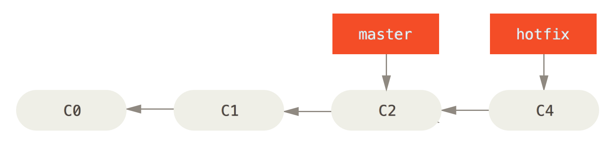
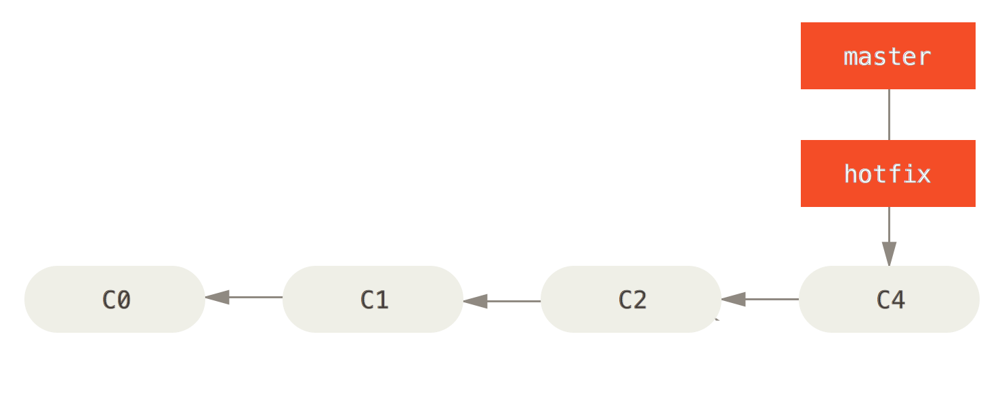
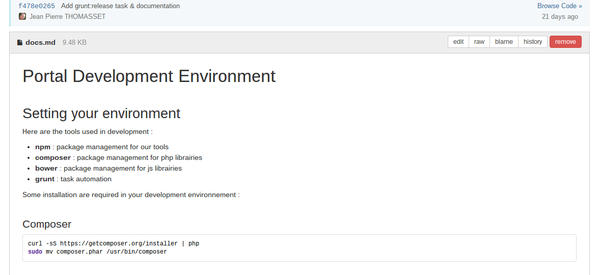

GIT
Do's and Don'ts
Quelques rappels
WTF ! C'est quoi ce truc...
Un espace de travail
workspace
C'est l'endroit où vous éditez vos sources
Un dépôt
repository
Un arbre de toutes les versions organisés autour de commits.

Qui contient tous les fichiers ?
Ce n'est pas une suite de 'diff' des différents fichiers mais bien un snapshot de l'intégralité

Une zone tampon
index ou staging area
C'est là ou se trouve vos modifications quand vous ajoutez une modification (git add)

Mais où est Waldo le serveur ?
C'est un dépôt distant !

commit, branch et merge...
Git c'est chiant, mais c'est bien comme ça !
Une branche c'est quoi ?
Une divergence dans l'arbre des commits 
Un cas simple, le fast-forward
$ git pull
Ou $ git fetch & git merge origin/2.1
Un cas simple, le fast-forward

Ok mais un vrai merge c'est quoi ?

Une réconciliation !
C'est la réconciliation des branches avec leur ancêtre commun

Dans un nouveau commit

En cas de conflit
C'est à vous de créer ce commit !
git statuspour voir les conflits- Examen du 1er fichier conflictuel (
git mergetool) - Arbitrage des conflits du fichier
git addpour marquer le fichier comme résolu- S’il reste des fichiers conflictuels, retour en (2).
- Sinon, finalisation avec
git commit.
Et un rebase c'est quoi ?
On repart d'une divergence

Si on faisait un merge

Mais on ne merge pas
$ git checkout experiment
$ git rebase master

Et on peut 'fast-forward'
$ git checkout master
$ git merge experiment

Les choses sérieuses
La vraie vie chez <insert company name> !
On 'commit' quels fichiers ?
- Les fichiers sources
- Les fichiers definissant les dépendances
- Les resources
Mais pas !
- Les binaires (beurk)
- Les librairies (re-beurk)
- Les fichiers de configuration (je me sens pas bien)
- Les fichiers projet (enfin des fois mais beurk quand même)
On 'commit' comment ?
- Souvent !
- Atomiquement !
- Et on met un joli message ! (la politesse quoi !)
- Avec un titre court mais explicite (pas de 'Divers' ou 'Correction de bug')
- Avec le numéro du ticket le cas échéant (mais pas juste le numéro)
- Un paragraphe de texte explicatif si besoin (après une ligne vide)
- Et des fois on push (mais moins souvent)
Oops !
Comment faire quand on a fait une boulette dans un commit ou dans une branche (non pushé) ?
- Pour corriger un message :
git commit --amend - Pour éditer ces changements avant un push :
Voir la super présentation de Christophe Porteneuve$ git lg @{u}.. $ git rebase -i @{u}
Quand est-ce qu'on...
merge ?
Quand on a fait des branches différentes qu'on veut réconcilier (feature/topic => master).
rebase ?
Quand on travaille sur une même branche à plusieurs.
NO MORE 'git pull'
enfin presque... mais vraiment pas souvent !
On fait soit
$ git fetch
$ git rebase xxxx
$ git fetch
$ git merge xxxx
Pour le quotidien
Ouais parce que c'est bien beau, mais je tape quoi comme commande moi ?
Commit simple
$ git add myfile.scala
$ git commit -m "fix the nasty bug"
On envoie sur le serveur
$ git pull
$ git mergetool # if needed
$ git push
Oups ! I did it again
Si on identifie un commit dont on veut se débarasser
$ git revert ef8c762
stash, stash
Sauvegarder ses modifications dans un espace temporaire sans commit
$ git stash
$ git stash pop
Recherche d'un historique
Pas de git blame mais :
$ git log
Et si je cherche dans une fonction en particulier
$ git log -L :ma_methode:path/vers/mon/fichier.php
Recherche d'une divergence
Recherche en ignorant les espaces
$ git diff -w
Et si je veux voir ce qui a été déjà ajouté à l'index
$ git diff --cached
rerere
Reuse Recorded Resolution
Cela permet de résoudre un conflit et de pouvoir rejouer cette résolution !
Demo
Recherche d'un commit
$ git branch -a --contains 7c28d2e
- Pour voir si un fix a bien été reporté
- Pour voir où un bug doit être corrigé
Cherry picking
Pour appliquer un commit là où on se trouve et reporter un bug-fix facilement par exemple
$ git cherry-pick 7c28d2e
Divers
Les petits plus si on a le temps
Markdown
Documentation directement accessible dans gitlab :  Exemple
Un prompt utile
Automatisez !
Créer des alias et des scripts pour automatiser votre quotidien !
Au minimum, documenter les pratiques (markdown dans gitlab, dropbox, wiki,...)
Conclusion
Git c'est bien, mangez-en !